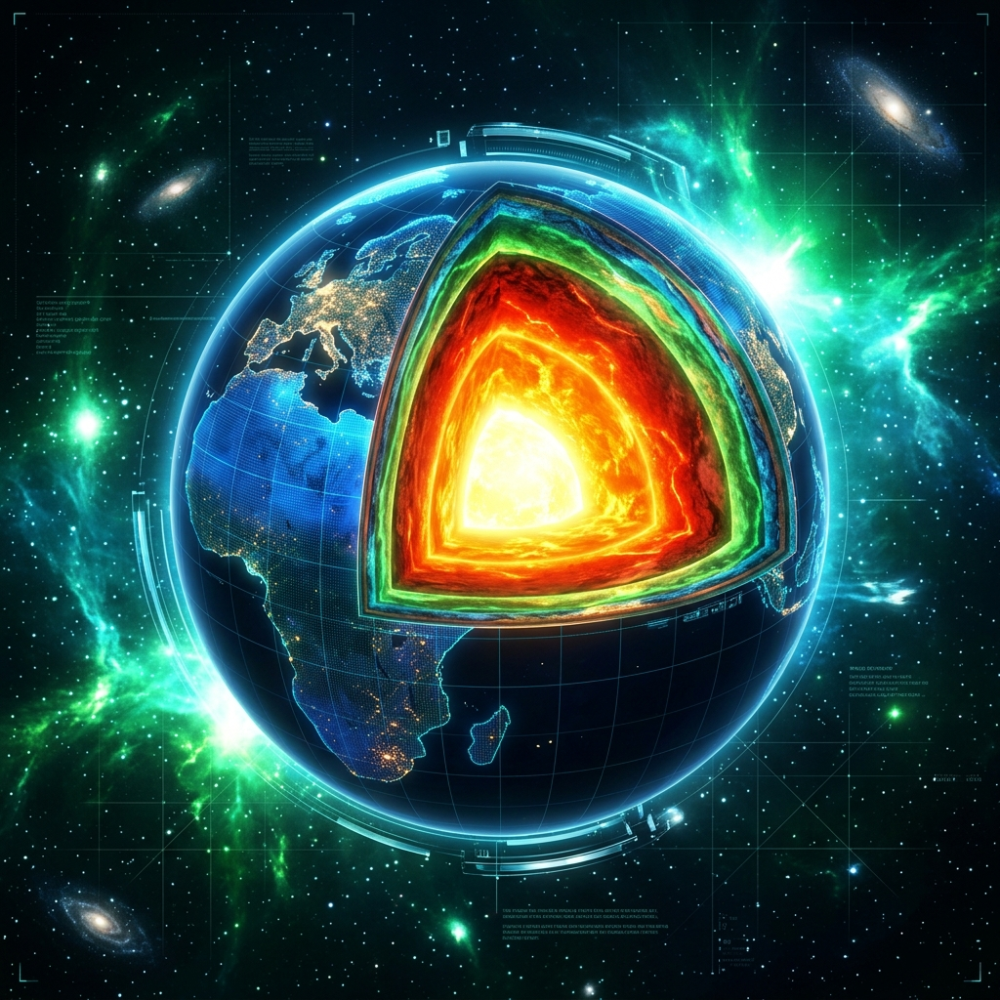

Reconstruct 3D structural geology profiles from raw borehole records in seconds. Build next-gen geotechnical products with cloud-native implicit modeling tools.

Utilizes kriging-based algorithms to automatically interpolate layer contacts and generate smooth volumetric lithology boundaries from sparse borehole log elevations.
Export and rotate high-fidelity GLB models in-browser. Fast vertical exaggeration adjustments and clipping plane cuts run instantly without re-solving models.
Full compatibility with geotechnical engineering AGS data structures and custom fall-back spreadsheet CSV schemas mapped to local grid coordinates.